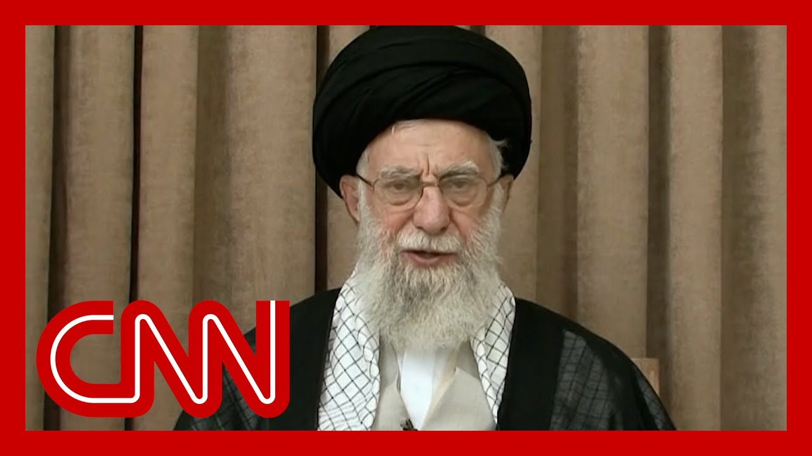

【聆听伊朗最高领袖在停火后的首次讲话】
Summary: The US president demanded Iran's surrender, but Iran's leader dismissed this as absurd, celebrating Iran's victory over the "fake Zionist regime" and asserting the Islamic Republic's resilience. Meanwhile, conflicting reports emerge about damage to Iran's nuclear facilities, with the US claiming severe setbacks while Iran denies major losses.
摘要： 美国总统要求伊朗投降，但伊朗领导人斥之为荒谬，并庆祝伊朗战胜“虚假的犹太复国主义政权”，强调伊斯兰共和国的韧性。与此同时，关于伊朗核设施受损程度的报告相互矛盾，美国声称其遭受重创，而伊朗否认重大损失。

⏱️ Estimated Reading Time: 17 min
📚 六级生词 📚 雅思生词 📚 托福生词 📚 专八生词 📚 SAT生词 📚 考研生词 📚 GRE生词 📚 高考生词
The US president said that Iran should surrender.
美国总统说伊朗应该投降。
That means there is no there's no more enrichment.
这意味着伊朗将不再进行铀浓缩活动。
It's the question of Iran to be surrendered.
投降与否是伊朗自己的问题。
To mention the word Iran is too much for the mouth of the US president to even pronounce it to to say, it's a great Iran and the word of surrender.
对美国总统来说，连提及“伊朗”这个词都难以启齿，更不用说将“伟大的伊朗”与“投降”相提并论。
They don't match.
这两者毫不相称。
They don't match with each other is a joke, is a ridiculous thing to say.
将它们混为一谈是个笑话，荒谬至极。
I would like to congratulate the great nation of Iran.
我要祝贺伟大的伊朗国家。
I want to congratulate them for a few reasons that first, I would like to congratulate them for victory over the fake regime of the Zionist regime.
我想祝贺他们几个原因，首先是他们战胜了虚假的犹太复国主义政权。
In it, with all those regime, Saddam claims that the Zionist regime were making money Taliban, as they almost were crushed under the blows of the Islamic, government.
其中，萨达姆声称犹太复国主义政权在塔利班牟利，而他们几乎在伊斯兰政府的打击下崩溃。
All right.
好吧。
Group chat is back.
群聊回来了。
Bring back Holly dagger.
把霍利匕首带回来。
we were just talking about this.
我们刚刚还在讨论这个。
Where is he now?
他现在在哪里？
We are seeing an image.
我们看到一张图像。
We haven't verified the image.
我们尚未核实这张图像。
What are your instincts as you're watching it?
你看到它时的直觉是什么？
Well, he looks exhausted and very worn out, and I would rightfully so.
嗯，他看起来筋疲力尽，这是理所当然的。
given the events of the past two weeks this war.
考虑到过去两周这场战争的局势。
And I think it's noteworthy that they're showing his face.
我认为值得注意的是他们展示了他的脸。
I think they wanted to make a point that this man is alive, that the Supreme leader is still around because of a lot of the conversations on the ground, like the questions about where is he?
我认为他们想证明这个人还活着，最高领袖仍然在位，因为现场有很多关于他在哪里的讨论。
Is he still alive?
他还活着吗？
So I think this was like a signaling that the Islamic Republic is still functioning for the time being.
所以我认为这是一种信号，表明伊斯兰共和国目前仍在运转。
Yeah.
是的。
And, Jasmine, I don't know to you, but, the timing, the timing happens just when the Trump administration had planned to have their own kind of show and talk about this, Netanyahu in Israel is also dealing with a corruption trial that has resurfaced.
贾斯敏，我不知道你怎么看，但这个时机恰好是特朗普政府计划展示自己并谈论此事的时候，而以色列的内塔尼亚胡也正面临重新浮出水面的腐败审判。
Can you talk about the timing, going into this week?
你能谈谈本周的时机吗？
Yeah.
是的。
I mean, I think so much of what Iran is doing is also playing to their domestic audience.
我认为伊朗的许多行动也是在迎合国内观众。
and so for the white House perspective, they're constantly trying to figure out what is for the domestic audience in Iran and what is for them, what they should be responding to.
因此，从白宫的角度来看，他们不断试图分辨哪些是伊朗国内观众的内容，哪些是针对他们的，以及他们应该如何回应。
And so I'm sure that you're going to hear the president respond to some of these claims, potentially, maybe we'll hear some that the 8:00 am, but they're constantly trying to sift through what they need to be consuming as they try to deal with this issue and what should be kind of left to the wayward, for Iran.
所以我确信你会听到总统回应其中一些说法，可能我们会在早上8点听到一些，但他们不断筛选需要处理的内容，以及哪些应该留给伊朗自行解决。
And they haven't I think that this issue or you're looking at this whole thing with Iran, it is just a fascinating time to see us all in America talking about this country again, talking about this, this region of the world again, and what we're trying to do with it as the as our country is running, you know, our country trying to engage with it.
我认为这个问题或你看到的伊朗整个局势，这是一个引人入胜的时刻，看到我们所有美国人再次谈论这个国家，再次谈论这个地区，以及我们国家在运作时试图如何处理它。
today, 8:00 I'm quite fascinating to see how the white House will try to finally put this to bed.
今天早上8点，我很想看看白宫将如何最终解决这个问题。
They clearly really care a lot about this moment and about how these strikes have been covered.
他们显然非常关心这一刻以及这些打击如何被报道。
And I think that we're going to see today, just what that spending look like.
我认为我们今天将看到这些行动的具体表现。
Jerusalem, last word to you.
耶路撒冷，最后听听你的看法。
I just think it's, it's hard when no one in America wants to see this war.
我只是认为，当美国没有人希望看到这场战争时，这很难。
When when after 9/11, there was a groundswell of frustration and anger from genuinely from the Democratic public that wanted to see action in the Middle East.
当9/11之后，民主党公众中涌现出真正的沮丧和愤怒，希望在中东采取行动。
That's not where we are right now.
这不是我们现在的情况。
Most people don't want to see, let alone boots on the ground.
大多数人不想看到，更不用说地面部队。
They don't want to see much more action in the Middle East, another forever war.
他们不想在中东看到更多行动，另一场无休止的战争。
And Iran's supreme leader lashing out at the U.S. in his first public comments since the cease fire with Israel.
伊朗最高领袖在与以色列停火后的首次公开讲话中猛烈抨击美国。
To the fact it comes as President Trump is still insisting that those nuclear sites in Iran were totally obliterated.
与此同时，特朗普总统仍坚称伊朗的核设施被彻底摧毁。
His words, despite a preliminary assessment from the Pentagon's own intelligence arm that found those strikes, set back Iran's program not by years, but by only a few months.
尽管五角大楼情报部门的初步评估发现这些打击仅使伊朗的核计划推迟了几个月而非数年。
CNN was the first to report that assessment.
CNN是第一个报道该评估的媒体。
But new this morning, the head of the United Nations nuclear watchdog says the centrifuges at Iran's Fordo nuclear facility are, quote, no longer operational after the strikes.
但今早最新消息，联合国核监督机构负责人表示，伊朗福尔多核设施的离心机在打击后“不再运作”。
This is before and after an image of that of that site, which is dug into a mountain and goes deep underground.
这是该设施打击前后的图像对比，该设施建在山中并深入地下。
And the head of the CIA now saying there is credible evidence that the strikes, quote, severely damaged Iran's nuclear program.
中央情报局局长现在表示，有可信证据表明打击“严重损坏”了伊朗的核计划。
Also new this morning, those first comments in days from Iran's supreme leader.
同样是今早，伊朗最高领袖多日来的首次讲话。
He claimed Iran, quote, crushed Israel and said the U.S. did not gain anything in this war.
他声称伊朗“击垮”了以色列，并表示美国在这场战争中一无所获。
President Trump says U.S. and Iran will meet next week on a possible nuclear deal, but Iran has declined to confirm that meeting.
特朗普总统表示美伊将于下周就可能的核协议会晤，但伊朗拒绝确认该会议。
We start with CNN's Alina Train, who is at the white House, as she always is for us in the morning.
我们从CNN的艾丽娜·特雷恩开始，她如常早晨在白宫为我们报道。
We, we are learning a lot of different things that are a lot of different words being used to describe exactly what happened, depending on who you talk to.
我们了解到许多不同的说法，具体描述取决于你询问的对象。
What are we expecting to hear out of this news conference today?
我们今天预计会从新闻发布会上听到什么？
Yeah.
是的。
Sorry.
抱歉。
I mean, look, we are four days out now from those U.S. strikes on these Iranian nuclear facilities, and it's clear that not only we are trying to learn more, but also we are getting increasingly more intelligence coming from this administration regarding the extent that those strikes did to damage these those nuclear facilities.
我的意思是，距离美国对伊朗核设施的打击已经过去四天，显然我们不仅试图了解更多，而且从政府获得的情报也越来越多，关于这些打击对核设施的破坏程度。
And essentially the question of whether they were severely damaged, they were moderately damaged or if they were totally obliterated, as the president has been has been saying repeatedly, now, now you mentioned it, but I want to repeat it again.
核心问题是它们是严重受损、中度受损，还是如总统反复所说的被彻底摧毁。
We have now heard from the CIA director, John Ratcliffe.
我们现在听到了中央情报局局长约翰·拉特克利夫的说法。
His words were that the strikes had, quote, severely damaged Iran's nuclear program.
他的说法是打击“严重损坏”了伊朗的核计划。
Then we also heard from the head of the International Atomic Energy Agency, who said that on the basis of satellite images, given the power of these bombs and technical characteristics of the centrifuges, that we do know now that they are no longer operational, referring to, the centrifuges at Fordow.
我们还听到国际原子能机构负责人的说法，他表示基于卫星图像，考虑到这些炸弹的威力和离心机的技术特性，我们现在知道它们不再运作，指的是福尔多的离心机。
Now, of course, we are continuing to hear Sarah, that much of these different intelligence reports are still preliminary.
当然，莎拉，我们继续听到这些不同的情报报告仍是初步的。
They're still trying to gather more evidence, and we are still waiting as well, to see if and when people are actually going to be able to go to these sites, physically on the ground and look at these different sites and really observe the damage, face to face, as the president suggested yesterday when he was at the NATO summit that people were doing now, really this entire subject, Sarah, dominated the NATO summit.
他们仍在收集更多证据，我们也在等待，看看人们是否以及何时能实际前往这些地点，实地查看并真正面对面观察损害，正如总统昨天在北约峰会上暗示的那样。
Yes.
是的。
And particularly that press conference we saw at the conclusion of the summit where the president not only was answering questions about this, but also clearly wanted to focus on some of these intelligence analysis analyzes and also really try to downplay that report from the Defense Intelligence Agency, one, that which I should say, for people who don't know is the intelligence agency.
尤其是峰会结束时的新闻发布会，总统不仅回答了相关问题，还明显想聚焦于一些情报分析，并试图淡化国防情报局的报告。
it's an arm.
它是情报机构的一个分支。
The intelligence arm of the Pentagon.
五角大楼的情报部门。
And the director of it is actually the principal intelligence advisor to Defense Secretary Pete Hegseth.
其局长实际上是国防部长皮特·赫格斯的首席情报顾问。
Now, we did hear as well from the president, but also say yesterday, reiterating over and over again this new intelligence analysis that they said had moderate to severe damage to these different nuclear sites, really trying to focus on the latter part of that severe damage.
我们还听到总统昨天反复重申新的情报分析，称这些核设施遭受中度至严重损坏，并着重强调严重损坏的部分。
and then we heard, you know, the president come out and continue to say, as well as Hegseth, that those sites were obliterated.
然后总统和赫格斯继续坚称这些设施被彻底摧毁。
All the same there.
尽管如此。
I think it's really important to note that one, I don't think anyone is, you know, trying to refute the the courageous and valiant efforts of those soldiers or, and, you know, people in the military who flew those planes and carried out these strikes.
我认为重要的是要注意，没有人试图否认那些飞行并执行打击的军人的勇敢和英勇努力。
The question is how much damage was really done to those different sites as the United States continues to assess really what the next steps are and how to move forward here.
问题在于这些设施实际遭受了多少损害，而美国仍在评估下一步行动。
All right, Elena, marine, thank you so much for your reporting there for us from the white House.
好的，艾丽娜，非常感谢你从白宫为我们带来的报道。
CNN's Nic Robertson is live on the ground in Tel Aviv.
CNN的尼克·罗伯逊正在特拉维夫现场报道。
Israel put out their own damage assessment of this.
以色列发布了他们自己的损害评估。
We've heard from, of course, President Trump.
当然，我们已经听到了特朗普总统的说法。
We are going to hear from Secretary of Defense Hegseth today.
我们今天还将听到国防部长赫格斯的说法。
What is the reaction on the ground there, where you have been reporting as you go from site to site, where some of these missiles from Iran have struck, buildings in Israel.
你在现场从一个地点到另一个地点报道，伊朗的一些导弹击中了以色列的建筑物，当地的反应如何？
Look, the view from people here is that they're happy that this is over, that they think it was a success.
这里的人们很高兴这一切结束了，他们认为这是一次成功。
They'll listen to the words of the Supreme leader in Iran.
他们会听伊朗最高领袖的讲话。
and when he describes a crushing victory over Israel, they'll see just how hollow that is, that that's not how it's perceived, and it's not how it is.
当他描述对以色列的压倒性胜利时，他们会发现这是多么空洞，这不是实际情况。
here interestingly, that's the same language that Prime Minister Netanyahu used two days ago to describe the victory over Iran, crushing the key question here, in both for both the military and the intelligence agencies and for the prime minister is how long, in the in terms of what the IAEA is describing, will those Iranian facilities remain out of operation?
有趣的是，内塔尼亚胡总理两天前用同样的语言描述对伊朗的胜利。关键问题是，对于军方、情报机构和总理来说，根据国际原子能机构的描述，这些伊朗设施将停运多久？
The prime minister here, Benjamin Netanyahu, has been very clear.
这里的总理本杰明·内塔尼亚胡非常明确。
If Iran does try to reconstitute its nuclear programs, then he said Israel will take the same actions as previous.
如果伊朗试图重建其核计划，他表示以色列将采取与之前相同的行动。
So that that is a very clear warning, to the Iranian leadership that this may not be over, depending on their next move.
因此，这是对伊朗领导层的明确警告，即根据他们的下一步行动，这可能还未结束。
Now, we know the Iranian parliament has voted, although this is not binding yet, not approved by the Guardian Council, voted not to interact and work with the International Atomic Energy Agency.
我们知道伊朗议会已投票决定不与国际原子能机构合作，尽管这尚未得到宪法监护委员会的批准。
And we know from the International they still have inspectors in Iran who haven't been able to do their work over the past number of weeks, and they are ready to go back to these sites to make their assessments and perhaps when and if they can.
我们从国际原子能机构了解到，他们仍有核查员在伊朗，过去几周无法开展工作，他们已准备好返回这些地点进行评估，如果可能的话。
And I think it's a big if at the moment that might get the best in depends on international eyes on the situation.
我认为目前这是一个很大的“如果”，可能取决于国际社会对局势的关注。
We do know from both the Mossad chief here, the intelligence service chief, and the head of the military head of the IDF here, that Iran's program has been set back several years, and not just a sort of an isolated strike, but a systemic, destruction of Iran's nuclear capabilities, according to the according to the IDF chief.
我们从摩萨德局长、情报部门负责人和以色列国防军负责人那里了解到，伊朗的核计划已被推迟数年，不仅是一次孤立打击，而是对伊朗核能力的系统性破坏。
But it it it's not clear how close and how much visibility Israel has been able to have on the ground, if at all.
但尚不清楚以色列在地面有多少实际可见性。
The Mossad chief did congratulate his operatives and their work inside Iran in the recent months, even years, he said.
摩萨德局长确实祝贺了其特工最近几个月甚至几年在伊朗的工作。
And we do know that specialist elite forces from the Israeli military were on the ground part of the time during their strikes.
我们还知道以色列军队的精英特种部队在打击期间部分时间在地面行动。